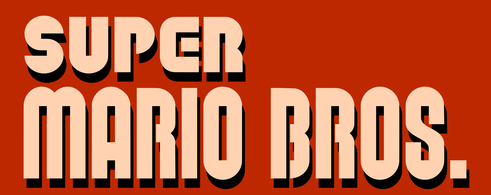
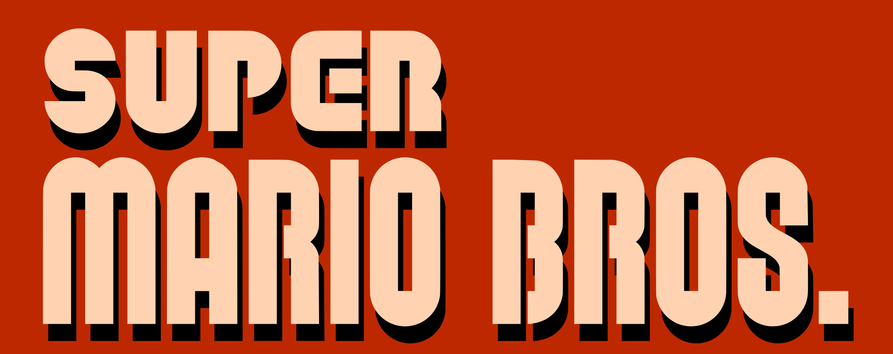
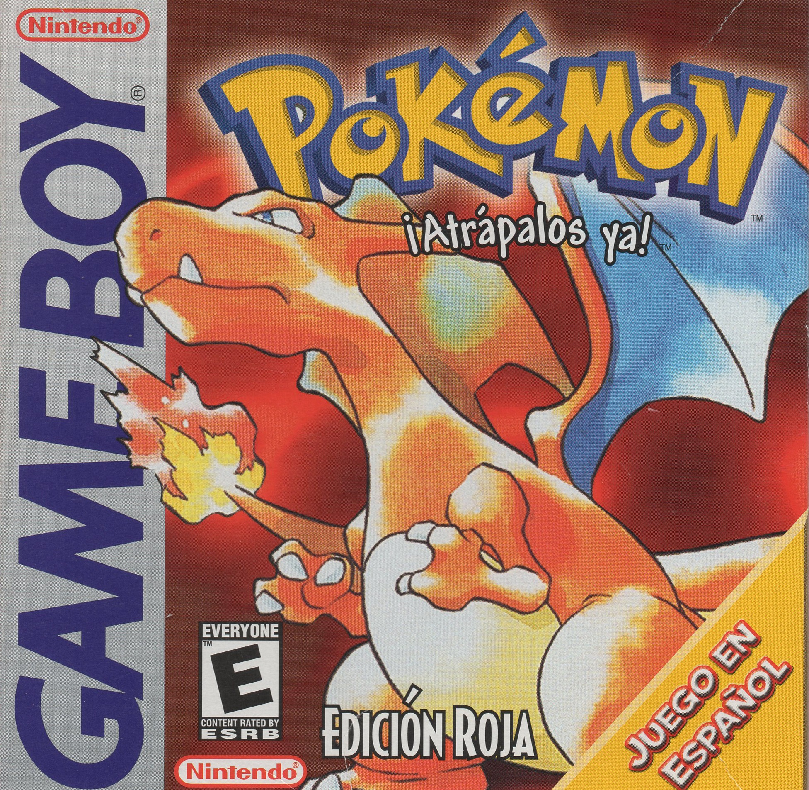
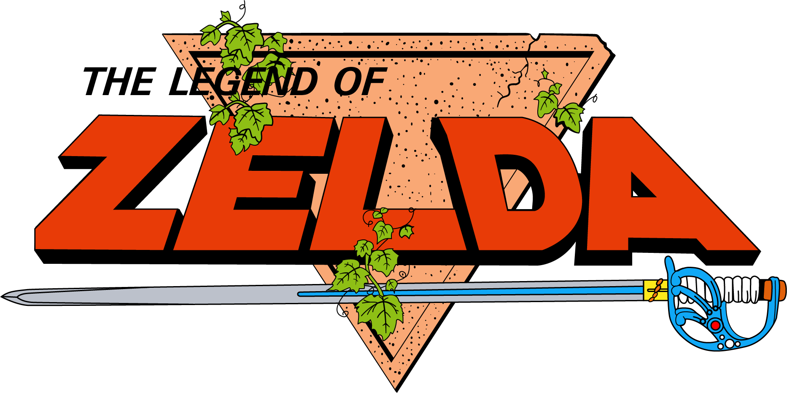

Super Mario Bros. (1985)
Comentari: Un dels jocs més emblemàtics de Nintendo. Amb una jugabilitat senzilla però addictiva, va marcar una generació. Encara avui, és molt divertit!
Comentari: Un dels jocs més emblemàtics de Nintendo. Amb una jugabilitat senzilla però addictiva, va marcar una generació. Encara avui, és molt divertit!
Comentari: Pokémon Rojo és el típic joc amb què molts vam començar. No té gràfics espectaculars, però té alguna cosa que enganxa: anar capturant Pokémon, explorar Kanto i derrotar líders de gimnàs et manté jugant hores. Tot i ser simple, té molt d’encant i encara avui val la pena provar-lo, sobretot si vols veure d’on surt tot aquest univers.
Comentari: Zelda és un dels jocs que mai es passa de moda. La sensació d'explorar, resoldre trencaclosques i descobrir secrets és increïble. El món està ple de detalls i cada masmorra et fa sentir que estàs avançant de veritat. Una gran experiència de joc!
